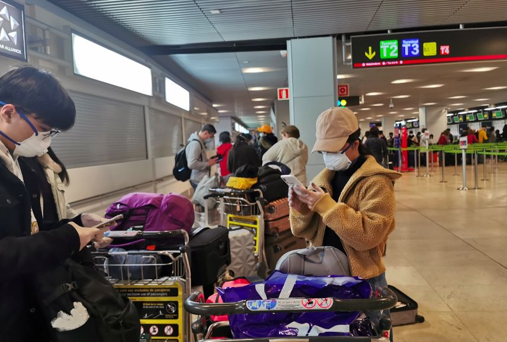
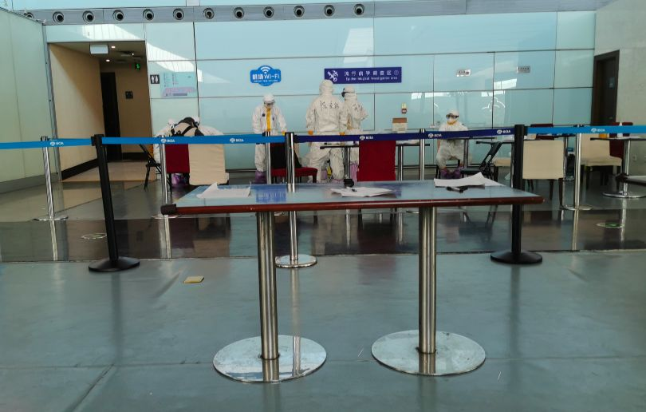
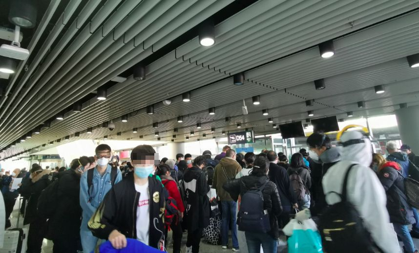
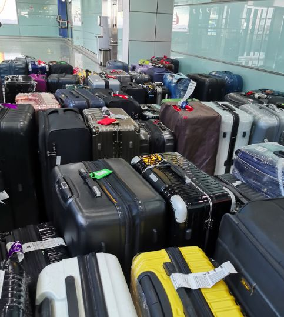
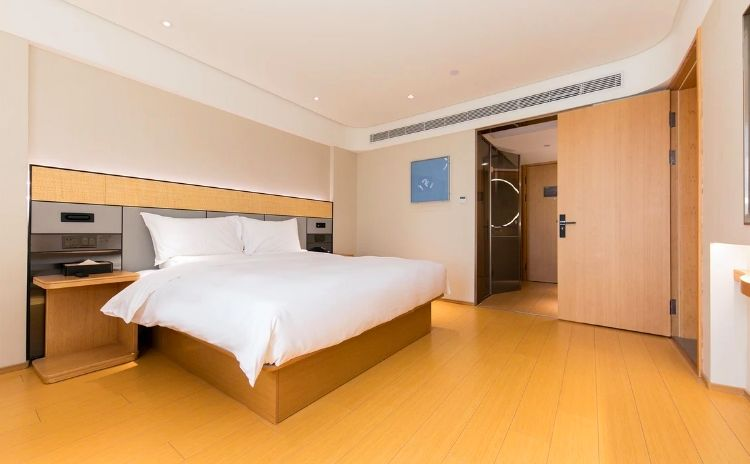
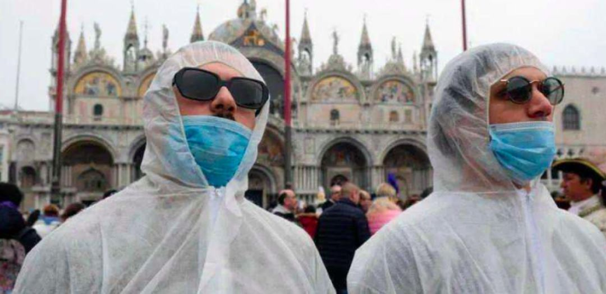

8名留学生讲述：“逃”回国内，我们太难了
原文链接 备份链接 《小酒馆》，是燃财经旗下的故事栏目，真人真事，讲述创新经济时代的人生百态。本文为第35期。 作者 | 金玙璠 孟亚娜 陈琪 编辑 | 魏佳 “新冠疫情，中国打上半场，世界打下半场，华人留学生打全场”。这虽然是一句调侃， …
这次疫情，也让我对祖国有了更深刻的认同，突发事件面前，我们国家的组织调配能力是一流的。
记者 | 沈 林
受访人 | 胡晓琳
最近很多在海外的同胞们都在纠结一个问题：非常时期，到底应不应该回国？或许我的经验可以给他们提供一些参考。
去年9月，我从福建到西班牙马德里的一所大学访学，同时作为带队老师管理国内前来交流学习的学生。我们原计划待到3月20日，结束在西班牙的各项工作回国，不过疫情的到来加速了我们的时间表。
1月初，国内暴发新冠肺炎疫情时，在国外的华人和留学生群体自发组织买遍了这里商店的口罩寄回国内，没想到，3月，西班牙的疫情变得严重了起来。最初的时候，是每天个位数的增长，后来是两位数的新增，突然有一天，就变成了三位数的新增。
到了3月10日，西班牙对疫情终于有所行动了，这一天，西班牙人对疫情的态度来了个180度大转弯，当晚我去附近超市采购的时候，发现超市已经被当地人搬空了（不过西班牙的物资供应还是很充足的，第二天所有货架又满了，后来老百姓也不哄抢物资，理性采购）。【更多西班牙疫情情况可点击：口述实录 | 再这么下去，我怕西班牙会变成下一个意大利】

随着西班牙疫情变得严重，我们决定提前离开西班牙，买了3月14日的俄航航班，转机莫斯科回到北京。
3月14日一大早，我们一行人带着各自行李出发去马德里机场，到了机场以后，发现还是有很多人没有戴口罩，粗略估计，西班牙人几乎都没有戴，而且机场的工作人员也几乎是全部没有戴口罩（不过他们都有戴一次性的手套）。不过好在，当时机场的人并不多，机场比较空旷。

我们到了莫斯科以后，一落地就被机场的情况震惊了（我们飞这一程时，机上的空乘人员都没有戴口罩）。到转机机场后，当时，我们和一架意大利来的航班同时落地，卡在同一个地方出关排队，当时心里很紧张，大家在一起排队，如果有确诊乘客，感染风险还是很大的。而且，对于意大利的乘客，俄罗斯机场并没有什么特殊的措施，不过，俄罗斯机场的工作人员大概有80%是戴了口罩，他们的装备比西班牙要好一些。

在我们飞北京的这段航程中，机组人员全程佩戴了口罩。到了北京以后，我们坐在飞机里，有工作人员提前拿到了航班乘客的信息，点到名了就跟他出去，我是第一批被点到名的，跟随工作人员做了咽拭子取样做核酸检测，做完这个之后就正常出关了。

但是没想到，做完检测到过海关的那段，聚集的人群特别多，我脑海里的第一反应就是这么多人，比我之前在西班牙的危险系数要更大。过了海关以后，我们去取行李，当天大概有十几个航班的行李，但是T3机场只开放了一个非常小的区域，所有航班的人都等在那里拿行李，行李太多，很多人还找不到自己的行李。


因为我是15日的航班，当天北京出台了一个新政策，要求从16日零点入境北京的人员统一在新国展中心隔离，因为15日飞往其他地方的航班还可以正常起飞，所以我还可以选择。
当时按照原计划，我们是应该从T3到T2转机到福州，但是当时工作人员告诉我们，如果要去T2的话，按要求也要被带到新国展中心隔离，我当时也给在T2的航空公司打了电话询问能不能派车接送，不过一直协调未果，当下我决定配合政策乘坐大巴去新国展统一安排。但当时去新国展的大巴30分钟一辆，我带了50KG的行李，也挤不上去车，等待了一个小时也没有顺利搭上大巴，所以最终我改签了当天最后一班从T3飞福州的航班。
目前，我在福州一家定点宾馆隔离，每天的隔离费用是180元，想吃什么可以在外卖平台点餐送到酒店，工作人员会放到门口。我的学生们被各自安排在当地定点酒店隔离，据我所知，他们住的酒店隔离费用是200元左右，但是包含了一日三餐，伙食很好。

我们学校已经复课了，所有老师都要求参与线上教学，所以在隔离的这段时间，我依然过得忙碌而充实，每天在备课和上课中度过。但偶尔，我还是会有些担心自己的身体情况——
到福州的第二天，我查询了我那天北京的病例新增情况，发现跟我同班回来的乘客中，有一名被确诊的乘客。
更令我感到后怕的是，这名乘客是与我同组接受咽拭子取样的，当时我们还有过简短对话。
当天，另外两名从西班牙回国的留学生也被确诊了，他们恰好也是我所在的西班牙大学的留学生。
我辗转得知，其实他们的预防措施做得已经相当到位了，但他们在西班牙是跟其他外籍人士合租的，外籍室友防护不得当，密切接触下，还是被感染了。他们应该回国前就知道自己大概率被感染，所以一下飞机就跟海关汇报了自己的情况。
在西班牙时，我已经宅在家里两周，很少接触人，但回国的这两段航程，我接触到的人可以说是爆炸性增长，我甚至不经意间就跟病毒携带者擦肩而过，我无法确定自己是否被感染，所以回国后家人要来看我，也被我拒绝了。
其实我还很担忧我的西班牙朋友们。我所在的学校已经有一个老师被他的父亲感染了，但他们现在还一家人住在一起，也没有试剂盒做确诊。当地媒体在防疫宣传上也做得很差，很多人不戴口罩，就算是戴，也没有好好地戴，我就看到过好几次外国人觉得口罩闷，把口罩下拉到鼻子以下的位置，完全没有防护效果，大概就像这样↓

图片来源：网络
隔离结束后，我想寄一点口罩给我的朋友，但据说西班牙海关现在已经征用一切私人的口罩和消杀产品，所以我的朋友们可能收不到物资。现在西班牙市面上的确没有口罩可买了，回国前我最后一次去超市买东西，陆续碰到三个西班牙人问我哪里可以买到口罩，要不是我手里也只有两个口罩（还是当时搜罗口罩寄回国内时剩下的），我真想送他们一些。
很多欧洲的朋友问我现在是否合适回国，我只能说，回国有回国的好处，就是万一你被感染了，能够得到及时有效的治疗，因为欧洲现在的情况，先不考虑是否公费治疗的问题，当地的医疗系统也已远超负荷了。但每天从机场回来的乘客里，都有被确诊的乘客。如果你能在国外做好自我隔离，那要慎重思考是否有必要现在冒着风险回国，因为回程之路也是风险巨大。
而且，许多国家都已经更新了抗疫措施，比如跟我同一个航班但是晚一点回国的留学生，因为俄罗斯16日宣布停飞所有来自意大利、西班牙的航班，所以他们暂时还没有回国。
不过，此时此刻，身处国内，起码心里是充满安全感的。这次疫情，也让我对祖国有了更深刻的认同，突发事件面前，我们国家的组织调配能力是一流的。如果西班牙政府能够像我们的政府一样勇于担当，全国一盘棋，在一开始采取有力措施，或许西班牙现在不会到如此地步。
除特殊说明外，图片均由受访者提供


· 深度好文 | 特朗普及西方政客们热衷炒作“中国病毒”的真正目的
· 还原世卫组织“吹哨”时间轴——“机会之窗”是如何失去的？
新民周刊所有平台稿件， 未经正式授权
一律不得转载、出版、改编或进行
与新民周刊版权相关的其他行为，违者必究


原文链接 备份链接 《小酒馆》，是燃财经旗下的故事栏目，真人真事，讲述创新经济时代的人生百态。本文为第35期。 作者 | 金玙璠 孟亚娜 陈琪 编辑 | 魏佳 “新冠疫情，中国打上半场，世界打下半场，华人留学生打全场”。这虽然是一句调侃， …
原文链接 备份链接 欧洲疫情不断扩散，英国确诊病例迅速增加，由于部分航班取消，在英留学生想马上回国并不容易 文丨《财经》记者 陈亮 王静仪 编辑丨施智梁 英国疫情蔓延近日明显加速。截至3月15日，英国新冠肺炎确诊病例数已达1372例，与前 …
原文链接 备份链接 中午时分伦敦Tesco超市的牙膏架 拍摄：高山清 记者：田思奇 王磬 编辑：曾宇 “ 直到登机，一些被迫回国的同学仍在犹豫是走是留。落地后的检疫和隔离安排很细致，不少同学表示不想连累家人，即便没有强制政策，也会申请集中 …
原文链接 备份链接 空旷的意大利机场。 记者：陈晓双 “ 因担心意大利疫情加剧，不少当地留学生选择回国。飙升的票价、不断取消的航班、各国趋严的出入境政策，让他们行程充满波折、等待和风险。 ” 意大利作为欧洲率先爆发新冠肺炎疫情的国家，仅三 …
原文链接 备份链接 根据伊朗卫生部消息，截至3月18日中午，伊朗累计确诊新冠肺炎病例17361例，其中5710例康复，1135例死亡。无论确诊还是死亡人数，都位居世界第三，仅次于中国和意大利。 伊朗也是目前已知最多政府官员确诊的国家，包括 …